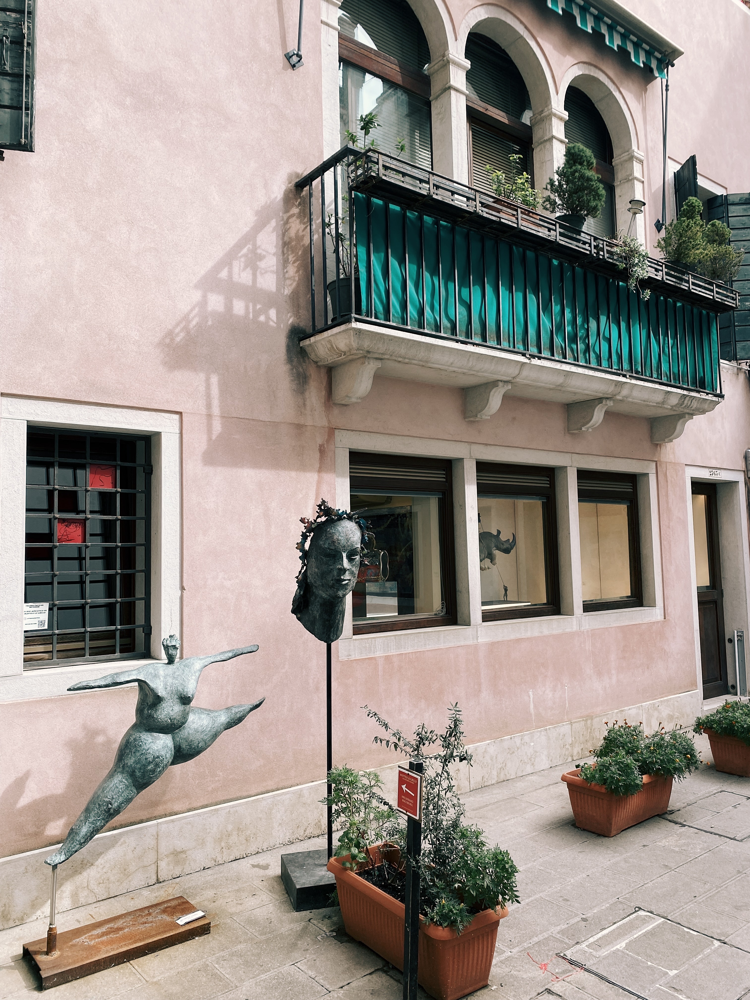
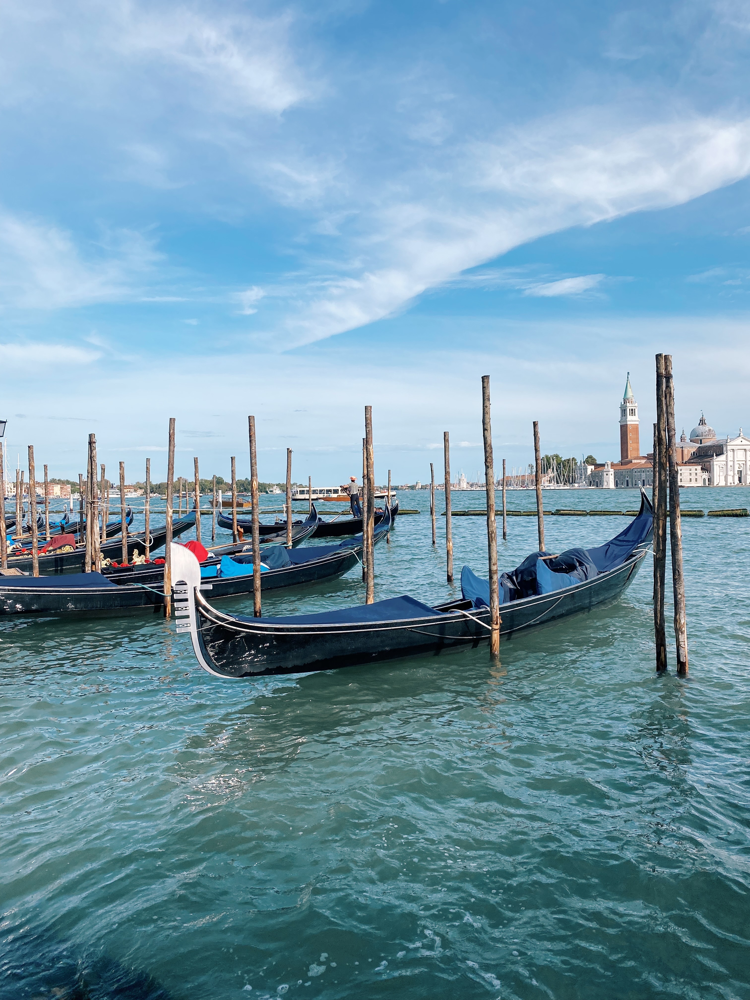
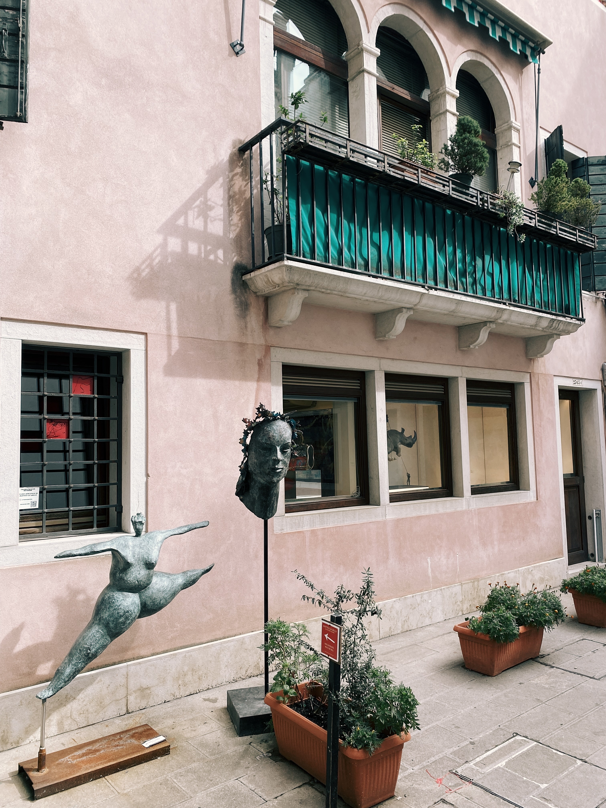
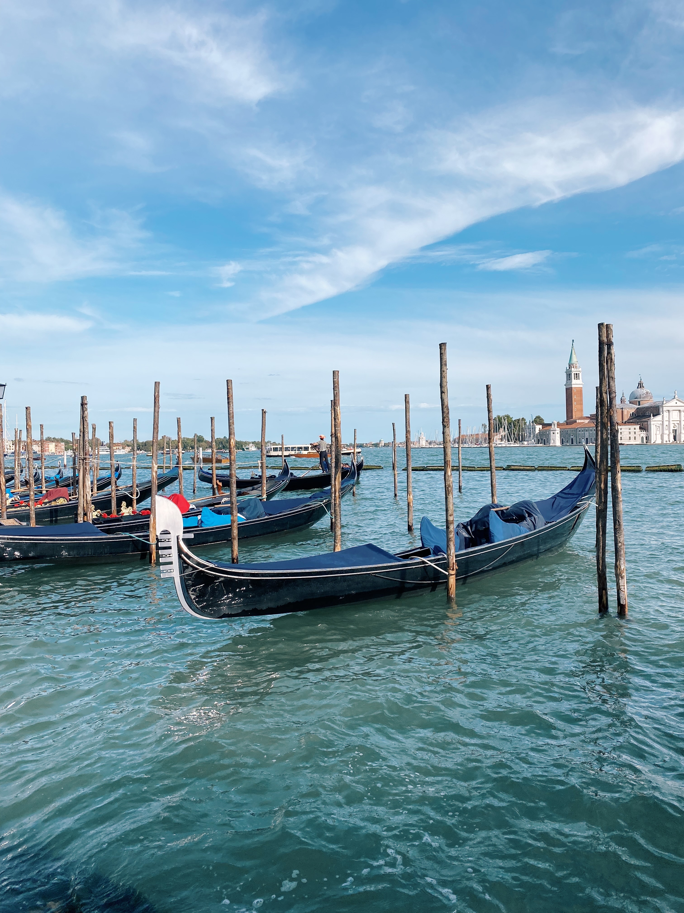
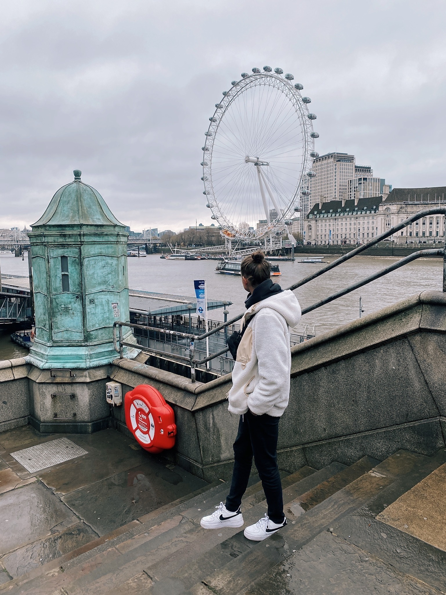
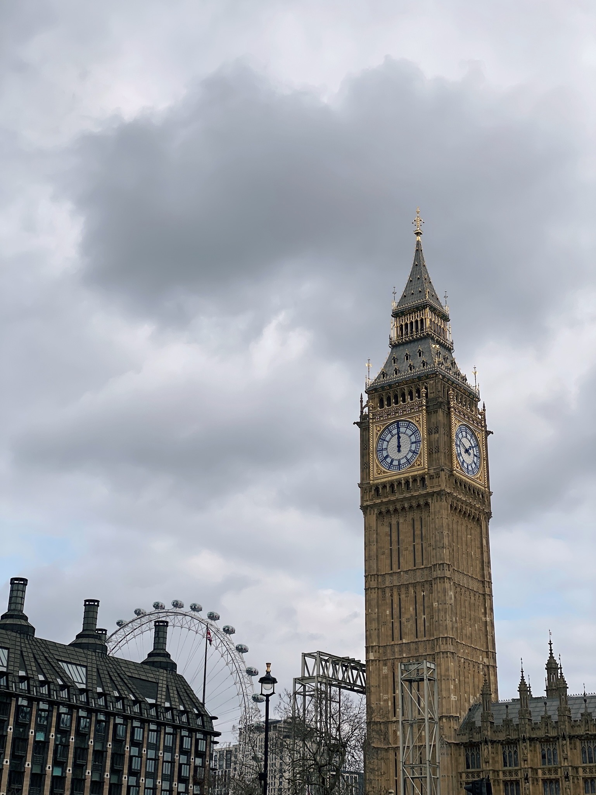

Ahoj!
Moje jméno je Alena Seimlová a jsem autorkou webové stránky, kterou práve čtete. Jsem 25ti letá holka z Českých Budějovic, která miluje cestování a fotografování.
Tato stránka je určena pro lidi, kteří by rádi vyrazili na výlet a nemají tip kam. Naleznetu tu nejen místa, kam například můžete vycestovat, ale i fotografie mnou pořízené! :)
ITÁLIE
 



Při letním roadtripu jsme samozřejmě navštívili i Itálii. Projeli jsme celkem 3 města - Milán, Verona a Benátky. Co 100% doporučuji je katedrála Narození Panny Marie, která je pátá nejvštší katedrála na světě. Na co v Itálii určitě nesmíte zapomenout je dát si italskou pizzu a Benátky si projdětě pěšky. Lodní doprava je drahá a na veškerá místa se dá krásně dojít pěšky.
ANGLIE



Do Anglie, přesněji do hlavní města Londýn, jsem vyrazila na jaře roku 2022 s kamarádkou. Měly jsme pouhý 2 dny na to projít celé město. V Londýně je řada úchvatných památek, které určitě stojí za návstěvu. London Eye, Big Ben a nebo projížďka v klasickém červeném autobusu zvaný "Double-decker", to vše musíte v Londýně vidět a zažít !!! :)